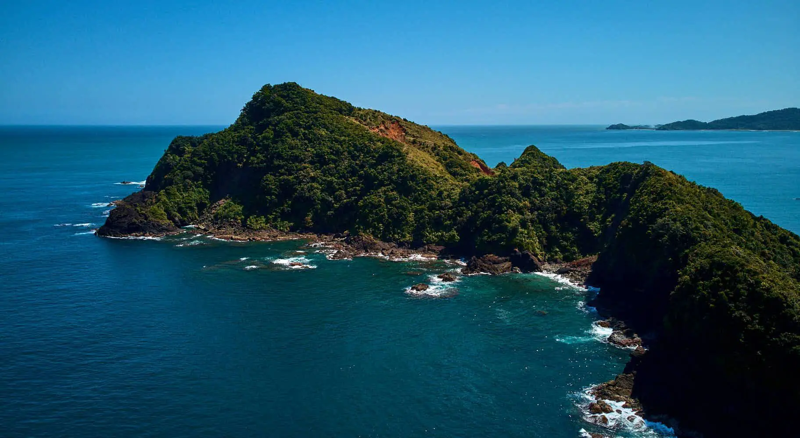

Welcome to Claveria, Cagayan!
Home
SentinelaCove
BlueLagoon
PataLighthouse
Taggat Lagoon
Taggat Lagoon serves as a gateway to Calayan Island and Fuga Island, some of the best places to visit in Claveria. This cove is a must-visit destination with its stunning wind-swept mountains, vibrant boats, and striking rock formations named Lakay Lakay and Apo Baket. And don't forget to check out the picturesque waterfall that flows into the rocky shore - it's a sight to behold!
